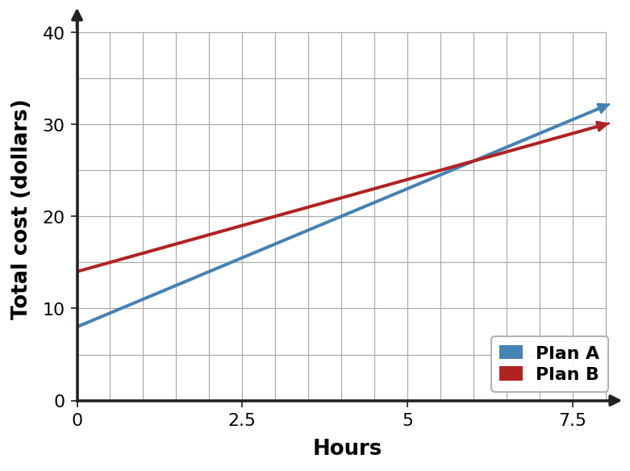

Comparing Linear Representations
Section 2.4
Build meaning across graphs, equations, tables, and contexts.
Learning Target
Students will analyze and compare linear relationships using multiple representations.
- I can construct comparison models for linear relationships shown in different forms.
- I can use slope and intercept information to interpret similarities and differences.
- I can critique conclusions about linear relationships using evidence from representations.
Vocabulary / Key Notation Preview
slope · intercept · rate · starting value · equivalent relationship
Sort the vocabulary. Write each vocabulary word in the column that best matches what you know right now. You may move a word later.
| Know for sure | Recognize | Don't know yet |
|---|---|---|
What's to Come
Circle anything familiar, underline symbols, labels, conditions, data, or features that seem important, and write short notes about what you think may matter later.
Two plans are graphed on the same axes. Focus on what the lines reveal, not on which one merely looks higher at one point.

(a) Which plan starts with the greater cost? (b) Which plan changes faster per hour? (c) Around what time do the costs become equal? (d) Explain why both starting value and rate matter when comparing the plans.
Let's Get Started
Skim the section. Record what catches your attention before you read closely.
| What I noticed | |
|---|---|
| What I predict | |
| What I wonder |
Annotate the words and visuals together. Underline evidence, circle or highlight bold vocabulary, label arrows, measurements, or important features, connect sentences to figures, and jot short questions or connections in the margins.
I can construct comparison models for linear relationships shown in different forms.
Comparing two linear relationships is easiest when you translate them into common features. One relationship might be shown as a graph and another as a table, but both still have a rate of change and a starting value. A comparison model organizes those invariant features so the forms can be compared fairly.
For an equation in slope-intercept form, slope and intercept are visible. For a table, compute the repeated output change per unit of input and identify or infer the output at $x=0$. For a graph, use axis scale, two points, and the vertical intercept. A context usually describes the same features with units and words.
A useful comparison separates questions. “Which starts larger?” is answered by starting value. “Which changes faster?” is answered by slope or rate. “Which has the greater output at a particular input?” may depend on both. Organizing the features before making a claim prevents one representation from dominating merely because it looks more familiar.
- Which two features let you compare linear relationships shown in different forms?
- How do you recover those features from a table?
- Why should “starts larger” and “changes faster” be treated as different questions?
| Relationship | Rate / Slope | Starting Value / Intercept | Evidence Source |
|---|---|---|---|
| A | ... | ... | graph / table / equation / context |
| B | ... | ... | graph / table / equation / context |
Example 1: Equation Vs Table
Relationship A is $y=x+4$. Relationship B is shown in the table. Compare their rates of change and starting values.
| $x$ | B: $y$ |
|---|---|
| $0$ | $-1$ |
| $2$ | $3$ |
| $4$ | $7$ |
You Try It 1: Equation Vs Table
Relationship A is $y=2x-3$. Relationship B is shown in the table. Compare their rates of change and starting values.
| $x$ | B: $y$ |
|---|---|
| $0$ | $5$ |
| $2$ | $7$ |
| $4$ | $9$ |
Example 2: Compare Two Tables
Compare the two linear relationships. Do not judge by the size of one displayed output; use rate and starting value.
| A: $x$ | A: $y$ |
|---|---|
| $0$ | $0$ |
| $2$ | $6$ |
| $4$ | $12$ |
| B: $x$ | B: $y$ |
|---|---|
| $0$ | $5$ |
| $3$ | $8$ |
| $6$ | $11$ |
You Try It 2: Compare Two Tables
Compare the two linear relationships. Use rate and starting value rather than one displayed output.
| A: $x$ | A: $y$ |
|---|---|
| $0$ | $6$ |
| $2$ | $4$ |
| $4$ | $2$ |
| B: $x$ | B: $y$ |
|---|---|
| $0$ | $1$ |
| $3$ | $7$ |
| $6$ | $13$ |
I can use slope and intercept information to interpret similarities and differences.
Two linear relationships can share some features and differ in others. Equal slopes mean equal rates of change; if their intercepts differ, their graphs are parallel rather than identical. Equal intercepts mean they start at the same output, but different slopes make them separate as input changes.
When slopes differ, compare the signed change carefully. A numerically greater slope means a greater change in $y$ per unit of $x$; for decreasing relationships, a more negative slope has a larger downward change in magnitude. Slope still does not tell which relationship has the greater output everywhere. A relationship that starts lower can eventually overtake one that starts higher. Finding where two equations have equal outputs identifies a crossover point.
Context makes the comparison more precise. A higher starting fee may be offset by a lower per-use cost, or a smaller initial amount may be paired with faster growth. Good comparisons therefore name both the rate and the starting value before drawing a conclusion about which option is better in a particular range.
- What do equal slopes but different intercepts tell you?
- Can a relationship with a smaller starting value ever become larger later? Why?
- What does a crossover point represent?
- Same slope + same intercept → same line.
- Same slope + different intercept → parallel lines.
- Different slopes → one may overtake the other.
- Set outputs equal to locate a crossover.
Example 3: Graph Vs Equation
Relationship A is the graphed line labeled A. Relationship C is $y=-x+3$. Which has the greater rate of change? Compare their starting values as well.

You Try It 3: Graph Vs Equation
Relationship A is the graphed line labeled A. Relationship C is $y=\frac{1}{2}x+4$. Which has the greater rate of change? Compare their starting values as well.
Example 4: Compare Rates and Starts in Context
Account A starts at 50 dollars and gains 8 dollars per week. Account B starts at 80 dollars and gains 5 dollars per week. Compare the rates and starting values. Which feature answers “changes faster,” and which answers “starts larger”?
You Try It 4: Compare Rates and Starts in Context
Plan A charges 10 dollars plus 4 dollars per visit. Plan B charges 20 dollars plus 2 dollars per visit. Compare the rates and starting values. Which feature answers “changes faster,” and which answers “starts larger”?
Example 5: Find a Crossover Point
For Relationship A, $y=3x+8$, and Relationship B, $y=2x+14$, find the input where their outputs are equal and identify which relationship has the greater rate of change.
You Try It 5: Find a Crossover Point
For Relationship A, $y=2x+20$, and Relationship B, $y=4x+4$, find the input where their outputs are equal and identify which relationship has the greater rate of change.
I can critique conclusions about linear relationships using evidence from representations.
A claim about two relationships should be supported with evidence from the representations. One output value cannot establish which relationship grows faster because that value reflects both prior starting position and accumulated change. To compare growth rates, use slope.
Visual appearance can also mislead. A line may look steeper because its graph uses a compressed vertical scale or stretched horizontal scale. Numerical slope calculations account for scale and provide stronger evidence than appearance alone.
Critiquing a conclusion means identifying what evidence is relevant, checking whether the evidence actually supports the claim, and explaining what additional information would settle the question. Strong reasoning distinguishes “starts larger,” “changes faster,” “is larger at this input,” and “represents an equivalent relationship.”
- Why is one output value not enough to determine which relationship changes faster?
- How can axis scale distort visual judgments of steepness?
- What evidence would you request before accepting a claim that two relationships are equivalent?
Use numerical rate and starting value as comparison evidence. Visual steepness is trustworthy only after checking both axis scales.
Example 6: Critique a Comparison Claim
Two lines have the same slope but different $y$-intercepts. Casey says they represent the same relationship. Decide whether equal slopes are enough to make two linear relationships identical.
You Try It 6: Critique a Comparison Claim
At $x=2$, Relationship A has the larger output, so Lee says A must always grow faster. Explain why one output value cannot establish which relationship grows faster.
Vocabulary / Notation Reference
Revisit the preview terms now that you have used them: slope · intercept · rate · starting value · equivalent relationship.
Summary
- Translate unlike representations into common features before comparing them.
- Slope answers how fast a relationship changes; intercept answers where it starts.
- Different rates can create crossover points, so the larger starting value may not remain larger.
- Critiques should use representation evidence, scale, and feature meaning rather than appearance or one sampled output.
Common Mistakes
| Mistake | Repair |
|---|---|
| Comparing only one output | One point does not isolate rate of change. |
| Calling equal slopes identical relationships | Different intercepts create parallel, different lines. |
| Judging slope by visual angle alone | Check numerical axis scales first. |
| Using “better” without specifying the input range | A crossover can change which relationship has the greater output. |